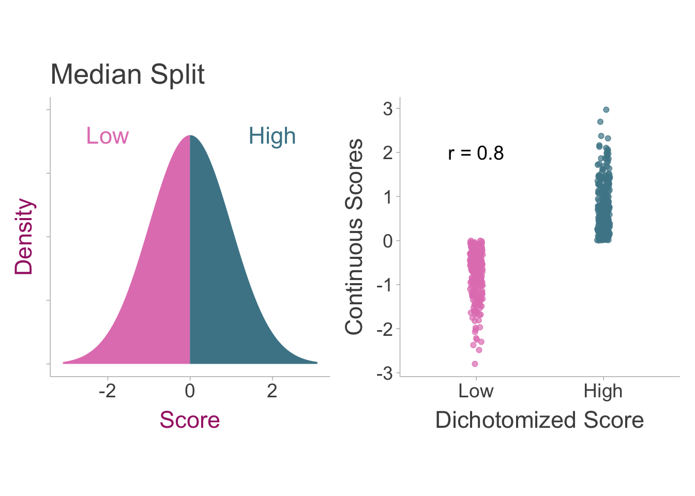
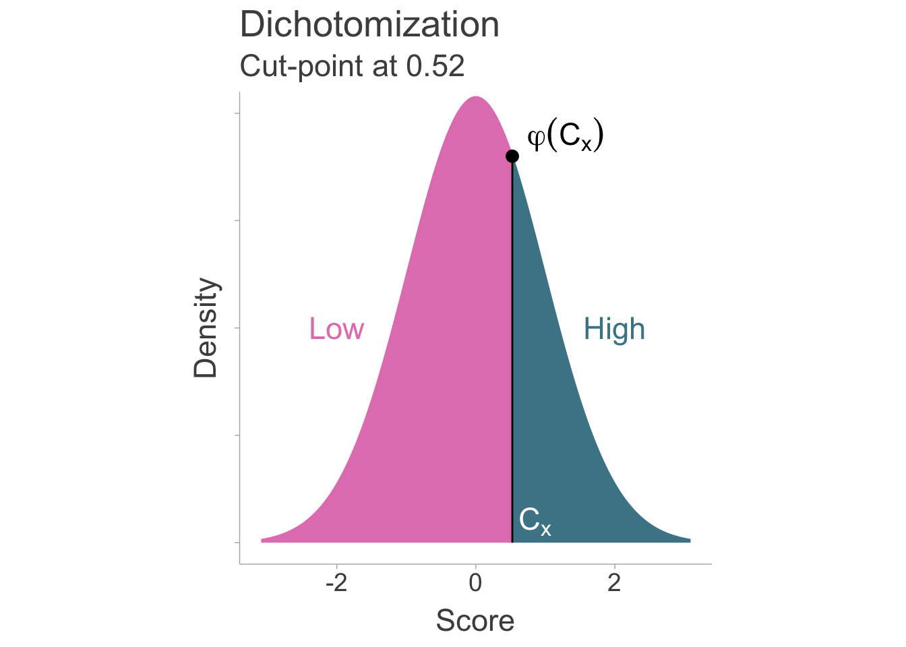

7.1 Introduction
Researchers occasionally split naturally continuous variables into two discrete groups to increase interpretability or conduct specific analyses (e.g., t-tests). However, artificially dichotomizing variables introduces measurement error variance thus attenuating effect size estimates Maxwell and Delaney (1993). The obvious solution to this problem is to simply not dichotomize variables, however if only summary data is available to us, then we may not have this luxury. Dichotomization can also be practical in some instances. For example, clinical disorder diagnoses such as generalized anxiety disorder, are examples of dichotomization where individuals are separated into either having the disorder or not even though individual differences in anxiety exist as a continuum.
7.2 Artificial Dichotomization Induced Measurement Error
Variables that are dichotomized contain measurement error. This can be demonstrated by the simple fact that dichotomized scores are not perfectly correlated with their underlying continuous scores. To demonstrate this, we can draw a sample of scores and then split the data into high and low scorers and then calculate the correlation coefficient between the two (see figure below). It becomes apparent that the dichotomized scores leave a lot of the variation in scores unaccounted for.
Even with a perfectly reliable measure, dichotomization will introduce measurement error variance. We can define naturally continuous scores (\(\ddagger\)) that have been artificially dichotomized as,
\[ x_\ddagger= \begin{cases} 1,& \text{if } x>C_x\\ 0,& \text{if } x<C_x \end{cases} \]
Where \(C_x\) is the cut-score on the standard normal distribution (assume \(x\) is standardized such that Mean = 0 and Variance = 1). The reliability can be defined as the correlation between dichotomized scores and the underlying continuous scores (\(r_{x_\ddagger x}\)).
7.3 Correcting Correlations for Artificial Dichotomization
7.3.1 Defining our estimand
Ultimately, we would like to know the correlation coefficient between two naturally continuous variables. Sticking with our notation for true scores, our estimand can be defined as the population correlation between continuous observed scores of the independent (\(x\)) and dependent variable (\(y\)), \(\rho_{xy}\). Where dichotomized scores can be defined as,
\[ x_\ddagger= \begin{cases} 1,& \text{if } x>C_x\\ 0,& \text{if } x<C_x \end{cases} \]
\[ y_\ddagger= \begin{cases} 1,& \text{if } y>C_y\\ 0,& \text{if } y<C_y \end{cases}. \]
Where \(C_x\) and \(C_y\) is the cut-score where the split took place for each variable. There are two cases of dichotomization that may occur in a given study: the univariate case where only one variable (either dependent or independent) is dichotomized and the bivariate case where both variables are dichotomized. In both cases, dichotomization will have a biasing effect on the observed study correlation coefficient. The observed study correlation can be modeled as a function of the population correlation on continuous scores (\(\rho_{xy}\); i.e., the estimand), an artifact biasing factor \(a\), and sampling error, \(\varepsilon\),
\[ r_{x_\ddagger y_\ddagger} = a\rho_{xy}+\varepsilon. \] Where unbiased estimate of \(\rho_{xy}\) can be calculated by dividing the observed correlation by the biasing factor, \(a\),
\[ r_c = \frac{r_{x_\ddagger y_\ddagger}}{a}. \]
7.3.2 Artifact Correction for Correlations
The Univariate Case
In the simplest case of dichotomization, only one variable is dichotomized and the other is left continuous. In this case, a Pearson product-moment correlation is equivalent to the point-biserial correlation coefficient, however for dichotomized data, the biserial correlation is a relatively unbiased estimate of the pearson correlation on the underlying continuous data (assuming normality). Therefore in the population, the observed correlation \(\rho_{x_\ddagger y}\) is biased by some artifact biasing factor, \(a\),
\[ \rho_{x_\ddagger y} = a\rho_{xy}. \]
The first step in estimating the bias in the correlation is to first identify the cut-point, \(C_x\), of the standard normal distribution where the split of the data occurred. This can be calculated by first obtaining the percent of the of the individuals in the low or high scoring group:
\[ p_x = \frac{ n_{\text{high}} }{n_{\text{high}} + n_{\text{low}}} \] or
\[ p_x = \frac{ n_{\text{low}} }{n_{\text{high}} + n_{\text{low}}}. \]
Where \(n\) indicates the sample size. Then we can use the quantile function (\(\phi^{-1}\); i.e., the inverse of the cumulative density of the standard normal distribution) to obtain the cut-point on the standard normal distribution,
\[ C_x = \phi^{-1}(p_x). \]
Using the cut-point and the proportion of group membership in either the low or high scoring group (\(p_x\)), the attenuation factor can be defined as (Hunter and Schmidt 1990),
\[ a =\frac{\varphi(C_x)}{\sqrt{p_x(1-p_x)}}. \]
Where \(\varphi\) is the normal ordinate function (i.e., probability density function of a standard normal distribution). Since a standard normal distribution is symmetric, the sign of \(C_x\) does not matter. In the case of a median split, where the cut-point would be placed at zero of a standard normal (splitting the distribution in equal halves), the attenuation factor would simplify to \(a =\frac{\varphi(0)}{\sqrt{.5(.5)}}\) \(=\frac{2}{\sqrt{2\pi}}\). To correct the pearson correlation when one of the variables is dichotomized, we can divide the observed correlation by the attenuation factor such that, \(r_c = \frac{r_{x_\ddagger y}}{a}\). Therefore the full correction equation is,
\[ r_c = \frac{r_{x_\ddagger y}}{\left[\frac{\varphi(C_x)}{\sqrt{p_x(1-p_x)}} \right]}. \tag{7.1}\]
Where the sampling variance of the corrected correlation (\(\sigma^2_{\varepsilon_c}\)) must also be adjusted using the artifact biasing factor (\(a\)), and the observed sampling variance (\(\sigma^2_{\varepsilon_o}\)),
\[ \sigma^2_{\varepsilon_c} =\frac{\sigma^2_{\varepsilon_o}} {a^2} =\frac{\sigma^2_{\varepsilon_o}} {\left[\frac{\varphi(C_x)}{\sqrt{p_x(1-p_x)}} \right]^2}. \]

The Bivariate Case
In some cases, both independent and dependent variables are dichotomized inducing measurement error in both variables. A pearson correlation calculated on these two dichotomized variables would be equal to the phi coefficient (or Matthew’s correlation coefficient) and we can denote it with our notation for dichotomized variables, \(r_{x_\ddagger y_\ddagger}\). The data can be structured in a contingency table.
| \(\boldsymbol{x_\ddagger=\text{Low}}\) | \(\boldsymbol{x_\ddagger=\text{High}}\) | |
| \(\boldsymbol{y_\ddagger=\text{Low}}\) | \(n_{LL}\) | \(n_{HL}\) |
| \(\boldsymbol{y_\ddagger=\text{High}}\) | \(n_{LH}\) | \(n_{HH}\) |
We can also visualize how this contingency table relates to an underlying continuous bivariate normal distribution. The ellipse indicates the correlation between \(x\) and \(y\). If \(x\) and \(y\) are positively correlated then we should more individuals populating the high-high and low-low cells rather than the high-low and low-high cells.

The proper correction is to calculate the tetrachoric correlation coefficient. The tetrachoric correlation is specifically meant for the relationship between two dichotomous scores that represent continuous underlying normal distribution. To calculate the tetrachoric correlation coefficient, the contingency table or the odds ratio must be available. To estimate the correlation of continuous variables (\(r_{xy}\)) we can approximate the tetrachoric correlation with the following formulation,
\[ r_c = \text{cos}\left(\frac{\pi}{1+\sqrt{\frac{n_{HH}n_{LL}}{n_{HL}n_{LH}}}}\right) \tag{7.2}\]
If the contingency table is not provided, but the odds ratio (\(OR=\frac{n_{HH}n_{LL}}{n_{HL}n_{LH}}\)) is, then we can calculate \(r_{xy}\) in terms of the odds ratio,
\[ r_c = \text{cos}\left(\frac{\pi}{1+\sqrt{OR}}\right) \]
The sampling variance must be calculated from the contingency table as well. A sampling variance approximation can be obtained from Pearson (1913), however due to the complexity of the formulation and because it is only an approximation, instead I recommend that researchers use a bootstrap procedure to obtain approximate confidence intervals. To do this, we must resample the contingency table (>10,000 iterations), calculating the tetrachoric correlation using Equation 7.2 upon each iteration. Once you obtain a tetrachoric correlation from each iteration, the standard deviation of all correlations can be used as an estimate of the standard error and the square of the standard error is the sampling variance.
Unfortunately, studies may not report the full contingency table. Instead they may report summary statistics like a chi-squared value or a phi coefficient (i.e., the pearson correlation on binary variables). If the \(\chi^2\)-statistic is reported, we can first convert that to a phi coefficient by using,
\[ r_{x_\ddagger y_\ddagger} = \sqrt{\frac{\chi^2}{n}} \]
Where \(n\) is the total sample size. From the phi coefficient, we can estimate the correlation of the continuous variables with a formula similar to Equation 7.1,
\[ r_c = \frac{r_{x_\ddagger y_\ddagger}}{\left[\frac{\varphi(C_x)}{\sqrt{p_x(1-p_x)}} \right]\left[\frac{\varphi(C_y)}{\sqrt{p_y(1-p_y)}} \right]} \tag{7.3}\]
This formula was introduced by Hunter and Schmidt (1990) and is a rough approximation of the correlation between the continuous independent and dependent variables (\(r_{xy}\)). The corresponding sampling variance of the corrected correlation coefficient is,
\[ \sigma^2_{\varepsilon_c} =\frac{\sigma^2_{\varepsilon_o}} {a^2} =\frac{\sigma^2_{\varepsilon_o}} {\left[\frac{\varphi(C_x)}{\sqrt{p_x(1-p_x)}} \right]^2\left[\frac{\varphi(C_y)}{\sqrt{p_y(1-p_y)}} \right]^2}. \]
7.3.3 Correcting Correlations for Dichotomization in R
To correct correlations for dichotomization in R, we can use the correct_r_dich in the psychmeta package. First let us simulate a data set of 100 individuals that are then dichotomized on both \(x\) and \(y\). We will use a median (50-50) split for each dichotomization.
# load packages
# install.packages('psychmeta')
# install.packages('MASS')
library(psychmeta)
library(MASS)
# set seed
set.seed(343)
# define parameters
rho = .50
n <- 500
# simulate data
data <- mvrnorm(n = n,
mu = c(0,0),
Sigma = data.frame(x=c(1,rho),
y=c(rho,1)),
empirical = TRUE)
# obtain scores
x = data[,1]
y = data[,2]
# dichotomize data
x_dich <- as.numeric(x>0)
y_dich <- as.numeric(y>0)
# compute observed correlation
ro <- cor(x_dich,y_dich)
# compute observed sampling variance
var_e_o <- (1 - ro^2)^2 / (n-1)
# compute split proportions
px = sum(x_dich==1)/length(x_dich)
py = sum(y_dich==1)/length(y_dich)We can correct the correlation using base R. In order to correct for dichotomization, we can use the equations presented in the previous section.
# get cut-point
Cy <- qnorm(py)
Cx <- qnorm(px)
# calculate attenuation factors
ax <- dnorm(Cx)/sqrt(px*(1-px))
ay <- dnorm(Cy)/sqrt(py*(1-py))
# correct r
rc <- ro / (ax*ay)
# adjust standard error for rc
var_e_c <- var_e_o * (rc/ro)^2
# print results
rbind(paste0('Observed: ro = ',round(ro,3)),
paste0('Observed: var = ',round(var_e_o,5)),
paste0('Corrected: rc = ',round(rc,3)),
paste0('Corrected var = ',round(var_e_c,5))) [,1]
[1,] "Observed: ro = 0.321"
[2,] "Observed: var = 0.00161"
[3,] "Corrected: rc = 0.504"
[4,] "Corrected var = 0.00398"We can also correct for dichotomization using the correct_r_dich function in the psychmeta package (Dahlke and Wiernik 2019).
correct_r_dich(ro,px=px,py=py,n=n) r_corrected var_e_corrected n_adj
1 0.5035871 0.003982818 140.87917.4 Correcting Standardized Mean Differences for Artificial Dichotomization
7.4.1 Defining our estimand
We would like to know the group difference between scores of a naturally continuous variable. Our estimand can thus be defined as the population standardized mean difference between groups \(A\) and \(B\) on continuous scores of the dependent variable (\(y\)), \(\delta_{y}\). Where dichotomized scores can be defined as
\[ y_{A\ddagger}= \begin{cases} 1,& \text{if } y_A>C_y\\ 0,& \text{if } y_A<C_y \end{cases} \]
\[ y_{B\ddagger}= \begin{cases} 1,& \text{if } y_B>C_y\\ 0,& \text{if } y_B<C_y \end{cases} \]
In studies of group differences, since the independent variable is already dichotomous, the only dichotomization that can occur is on the dependent variable. The observed study standardized mean difference can be modeled as a function of the population standardized mean difference on continuous scores (\(\delta_{y}\); i.e., the estimand), an artifact biasing factor \(a\), and sampling error, \(\varepsilon\),
\[ d_{y_\ddagger} = a\delta_{y}+\varepsilon. \] Where unbiased estimate of \(\delta_{y}\) can be calculated by dividing the observed standardized mean difference by the biasing factor, \(a\),
\[ d_c = \frac{d_{y_\ddagger}}{a}. \]
7.4.2 Artifact Correction for Standardized Mean Differences
The simplest way to correct for dichotomization in a standardized mean difference is to first convert the observed \(d\) value of the dichotomized dependent variable to a correlation coefficient. When converting to a correlation coefficient, it’s important to note the binary nature of both variables, leading us to estimate the phi coefficient rather than the point-biserial correlation that we would be estimating if the dependent variable was continuous. To calculate the phi coefficient from a \(d\) value we can use the proportion of group membership in group \(A\) or group \(B\) (\(p\); it does not matter which one is chosen, as long as it is consistent for every instance of \(p\)),
\[ r_o = \frac{d_{y_\ddagger}}{\sqrt{d_{y_\ddagger}^2+\frac{1}{p(1-p)}}} \]
We can then correct the phi coefficient similar to how we correct the point-biserial correlation in Section 7.3.2,
\[ r_c = \frac{r_o}{\left[\frac{\varphi(C_y)}{\sqrt{p_y (1-p_y)}}\right]}. \]
Then we can convert the corrected correlation back into a standardized mean difference,
\[ d_c = \frac{r_c}{\sqrt{p\left(1-p\right)\left(1-r_c^2\right)}}. \]
Where \(d_c\) is our corrected correlation. The observed sampling variance (\(\sigma_{\varepsilon_o}\)) must also be corrected using the same three step procedure. For simplicity, we will consolidate this into one formula,
\[ \sigma^2_{\varepsilon_c} = \frac {\sigma^2_{\varepsilon_o} \left(\frac{r_c}{r_o}\right)^2} {\left(1+d_{y_\ddagger}^2p[1-p]\right)^3(1-r_c^2)^3}. \]
Obtaining Standardized Mean Difference from Odds Ratio
In most cases, difference in dichotomized outcomes between two groups is unlikely to be reported as a standardized mean difference, instead it will be more commonly reported as an odds ratio (\(OR\)). The odds ratio is the difference in the ratio of high and low scorers of group \(A\) and group \(B\), such that,
\[ OR = \frac{\left(\frac{n_{A,\text{high}}}{n_{A,\text{low}}}\right)}{\left(\frac{n_{B,\text{high}}}{n_{B,\text{low}}}\right)} \] Where \(n_{Group,\text{high/low}}\) is the corresponding sample size. The odds ratio is asymmetric about \(1\) (null), but we can make it symmetric by log transforming it (\(\log(OR)\)). The sampling variance of the log odds ratio \(\sigma^2_{\log(OR)}\) can be defined as,
\[ \sigma^2_{\log(OR)} = \frac{1}{n_{A,\text{low}}} + \frac{1}{n_{A,\text{high}}} + \frac{1}{n_{B,\text{low}}} + \frac{1}{n_{B,\text{high}}} \]
The equation above requires the full contingency table to compute. From there we can use the cox-logit method to convert the odds ratio to a $d$ value (cox1989?; haddock1998?). Them method is quite simple as it just divides the log odds ratio by 1.65,
\[ d_c = \frac{\log(OR)}{1.65} \] and the corresponding sampling variance of the \(d\) value is,
\[ \sigma^2_{\varepsilon_c} = \frac{\sigma^2_{\log(OR)}}{1.65^2}. \]
7.4.3 Correcting Standardized Mean Differences in R
To correct standardized mean differences for dichotomization in R . At the moment the psychmeta package does not have a correct_d_dich function. In order to correct for dichotomization, we can use the three step process from Section 7.4.2. Lets simulate data based on a true standardized mean difference of \(\delta_y=0.50\) and \(y\) scores that have been cut in half (i.e., a 50-50 median split).
# set seed
set.seed(343)
# define parameters
delta = .50
nA <- nB <- 1000
n <- nA + nB
p <- nA / n
# simulate data
yA <- rnorm(nA,.50,1)
yB <- rnorm(nB,0,1)
y_dich <- as.numeric(c(yA,yB)>0)
yA_dich <- y_dich[1:nA]
yB_dich <- y_dich[(nA+1):n]
# calculate observed standardized mean difference
do = (mean(yA_dich) - mean(yB_dich)) / sqrt((var(yA_dich) + var(yB_dich))/2)
# calculate observed sampling variance
var_e_o = (n / (nA * nB) + do^2 / (2 * n))
# get cut-point
py = sum(y_dich==1)/length(y_dich)
Cy = qnorm(py)
# calculate attenuation factor of y
ay <- dnorm(Cy)/sqrt(py*(1-py)) # attenuation factor for dichotomization in y
# convert d to r
ro <- do / sqrt(do^2 + (1 / (p*(1-p))))
# correct r
rc <- ro / ay
# convert r to d
dc <- rc / sqrt(p*(1-p)*(1-rc^2))
# correct sampling variance
var_e_c <- (var_e_o * (rc/ro)^2) / ((1+do^2*p*(1-p))^3 * (1-rc^2)^3)
# print results
rbind(paste0('Observed: do = ',round(do,3)),
paste0('Observed: var = ',round(var_e_o,6)),
paste0('Corrected: dc = ',round(dc,3)),
paste0('Corrected: var = ',round(var_e_c,6))) [,1]
[1,] "Observed: do = 0.43"
[2,] "Observed: var = 0.002046"
[3,] "Corrected: dc = 0.553"
[4,] "Corrected: var = 0.003586"